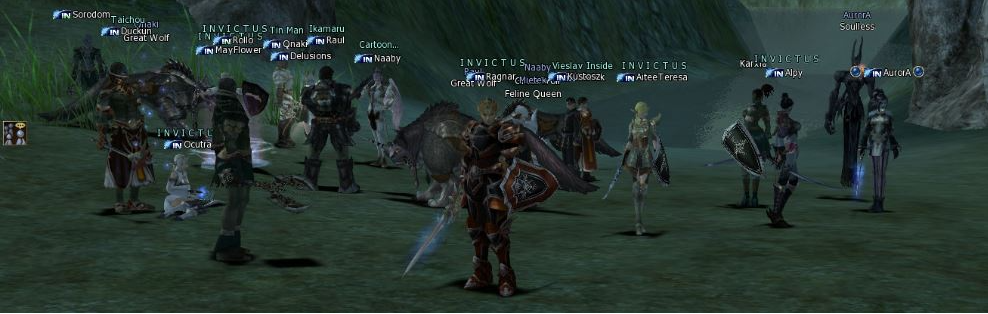

Jogos que fizeram sucesso no mundo!
Lineage 2 (MMORPG) e League of Legends (MOBA) fizeram sucesso global nos últimos anos!
Lineage 2
Lineage II é um MMORPG desenvolvido pela NCsoft, e publicado em 1 de outubro de 2003 na Coreia do Sul. Ficou muito conhecido por ser a sucessão do Lineage: "The Sacred Destiny" publicado em 12 de fevereiro de 2000, criado pela ASCII, hoje pertencido a NCsoft, no Japão.
À medida que o personagem derrota monstros e termina quests, recebe SP (Skill Points) que servem para adquirir Skills (Técnicas), apertando Alt + K. Como dito, as Skills variam entre raças e classes. Ao atingir o nível 85 (a quarta classe), o jogador tem suas habilidades totalmente remodeladas, de acordo com a sua classes. Saiba mais
Veja um vídeo abaixo do modo PVP no Lineage 2
Nesse vídeo o jogador está utilizando a classe conhecida como Duelista.
League of Legends
Em seu lançamento, League of Legends recebeu várias avaliações positivas dos críticos, que destacaram a acessibilidade, design de personagens e valor de produção. Sua longa vida útil resultou em uma reavaliação crítica, também com análises positivas. Por outro lado, o comportamento negativo e abusivo de seus jogadores, criticado desde o seu lançamento, persiste, apesar das tentativas da Riot de corrigir o problema. Em 2019, o título atingiu o pico de oito milhões de jogadores simultâneos, com sua popularidade levando a conexões com outras mídias. Seu sucesso também gerou vários jogos derivados, incluindo uma versão para celular. Saiba mais